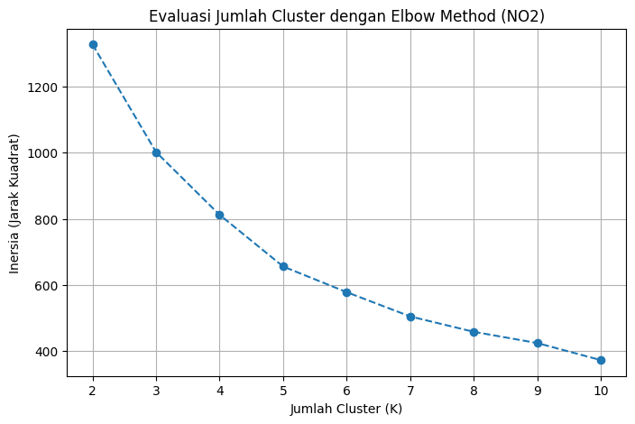
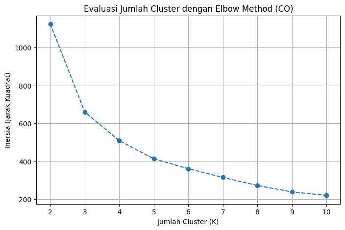
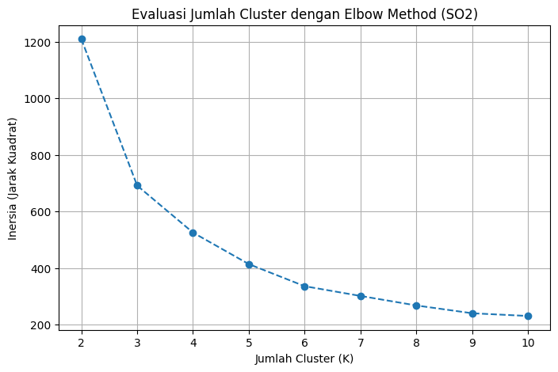
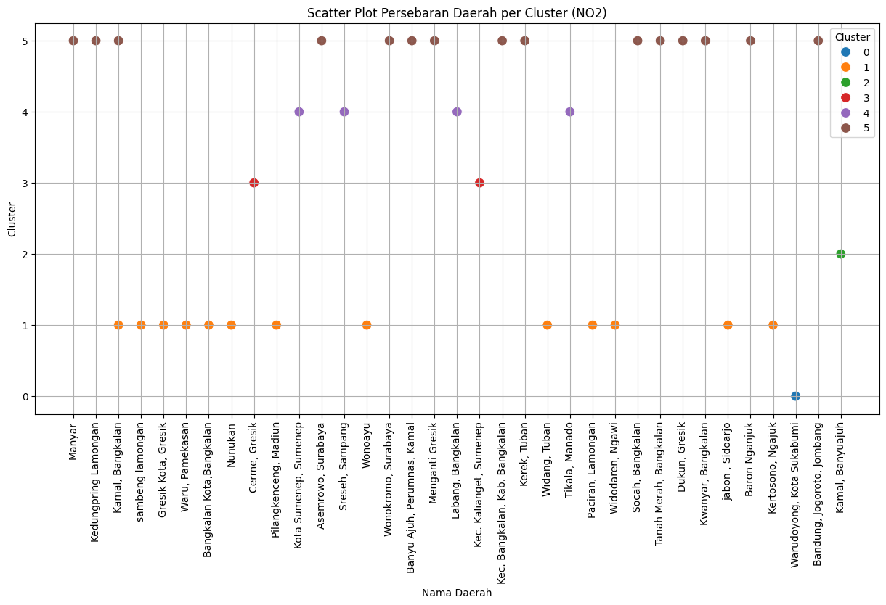
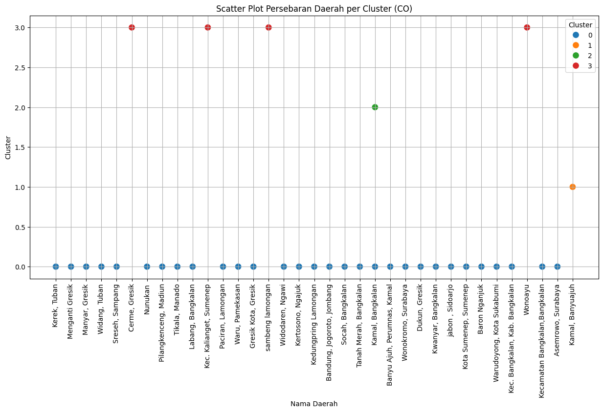
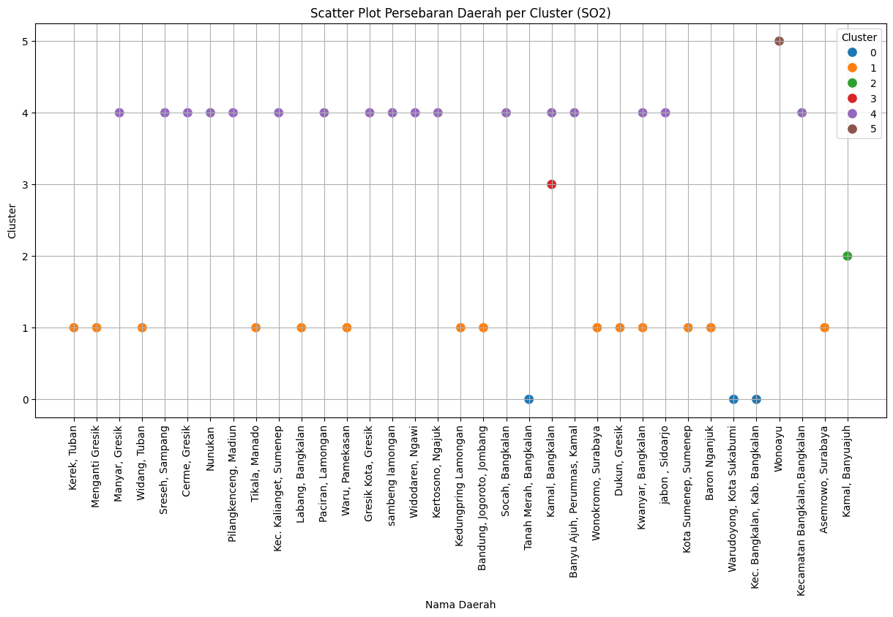

Clustering Polutan Udara (NO2, CO, SO2)#
Dokumen ini menjelaskan proses pengelompokan (clustering) wilayah berdasarkan tingkat dan karakteristik polutan udara (NO2, CO, dan SO2). Data yang digunakan merupakan hasil ekstraksi fitur deret waktu menggunakan TSFEL dari 37 mahasiswa / wilayah kajian (termasuk wilayah Sambeng, Lamongan dan sekitarnya).
Tujuan utama analisis ini adalah:
Menguji apakah data fitur polutan memiliki kecenderungan mengelompok secara alami (Cluster Tendency).
Melakukan reduksi dimensi fitur menjadi 37 komponen menggunakan Principal Component Analysis (PCA).
Menentukan jumlah klaster optimal (\(k\)) menggunakan kombinasi Elbow Method (Inertia/WCSS) dan Silhouette Score.
Membandingkan hasil klastering antara data hasil reduksi PCA 37 komponen dengan 68 fitur asli.
Memvisualisasikan persebaran daerah per klaster (Scatter Plot) serta melakukan profiling daerah untuk mengidentifikasi tingkat keparahan polusi.
1. Konsep Dasar & Metodologi Analisis#
1.1 Principal Component Analysis (PCA) & Alasan Reduksi ke 37 Komponen#
PCA adalah teknik reduksi dimensi linier yang mentransformasikan fitur-fitur asli menjadi sekumpulan variabel baru yang saling ortogonal (tidak berkorelasi) yang disebut Principal Components (PC).
Mengapa reduksi dimensi dilakukan menjadi 37 komponen?
Batas Rank Aljabar Linier: Dataset kelas terdiri atas \(N = 37\) baris sampel (lokasi) dan \(P = 68\) kolom fitur numerik TSFEL. Secara matematis, rank maksimum dari matriks kovarians data dibatasi oleh: $\(\text{Rank Maksimum} = \min(N, P) = \min(37, 68) = 37\)$
Preservasi 100% Variansi: Dengan mengambil 37 komponen utama, model mempertahankan 100.00% variansi kumulatif dari data asli tanpa ada kehilangan informasi sedikit pun.
Efisiensi & Visualisasi: Dua komponen pertama (PC1 dan PC2) merangkum sebagian besar variansi dominan (\(\approx 70\% - 77\%\)), sehingga sangat ideal untuk diproyeksikan ke dalam grafik 2D (Scatter Plot).
1.2 Uji Kecenderungan Klaster (Hopkins Statistic)#
Sebelum menentukan jumlah klaster \(k\), kita perlu memastikan apakah data benar-benar memiliki struktur pengelompokan alami, atau hanya sebaran acak/seragam (uniform noise). Pengujian dilakukan menggunakan Hopkins Statistic (\(H\)):
Jika \(H \approx 0.5\): data tersebar secara acak seragam (tidak layak diklaster).
Jika \(H > 0.75\): data memiliki kecenderungan mengelompok (clustering tendency) yang sangat kuat.
Hasil Uji Hopkins pada Dataset Kelas:
Polutan CO: \(H = 0.880\) (Struktur klaster sangat kuat)
Polutan NO2: \(H = 0.842\) (Struktur klaster sangat kuat)
Polutan SO2: \(H = 0.886\) (Struktur klaster sangat kuat)
1.3 Metrik Penentuan Jumlah Klaster Optimal (\(k\))#
Elbow Method (Inersia / WCSS): Menghitung total jarak kuadrat antara setiap titik data ke pusat klasternya (centroid). Titik “siku” (elbow) pada kurva menunjukkan titik penurunan inersia yang mulai melandai.
Silhouette Score: Mengukur seberapa dekat suatu titik dengan anggota klasternya sendiri dibandingkan dengan klaster terdekat lainnya (rentang nilai \(-1\) hingga \(+1\)).
Panduan Interpretasi Silhouette Score (Kaufman & Rousseeuw):
Rentang Skor Silhouette |
Kualitas Struktur Klaster |
|---|---|
0.71 – 1.00 |
Struktur klaster Sangat Kuat (Strong Structure) |
0.51 – 0.70 |
Struktur klaster Cukup Meyakinkan (Reasonable Structure) |
0.26 – 0.50 |
Struktur klaster Lemah (Weak Structure) |
\(\le\) 0.25 |
Tidak ada struktur klaster yang berarti |
2. Implementasi K-Means dengan Python (Scikit-Learn)#
2.1 Evaluasi Jumlah Cluster (Elbow Method & Silhouette Analysis)#
Pada tahap ini, kita melatih model K-Means pada data hasil reduksi PCA 37 komponen untuk rentang \(k = 2\) sampai \(k = 10\), kemudian mengevaluasi kurva inersia dan skor pemisahannya.
NO2
import pandas as pd
from sklearn.preprocessing import StandardScaler
from sklearn.decomposition import PCA
from sklearn.cluster import KMeans
import matplotlib.pyplot as plt
df = pd.read_csv('ekstraksi_fitur_no2.csv')
fitur = df.drop(['id', 'nama', 'daerah'], axis=1)
scaler = StandardScaler()
fitur_scaled = scaler.fit_transform(fitur)
fitur_pca = PCA(n_components=37).fit_transform(fitur_scaled)
inertia = []
K_range = range(2, 11)
for k in K_range:
kmeans_temp = KMeans(n_clusters=k, random_state=42, n_init=10)
kmeans_temp.fit(fitur_pca)
inertia.append(kmeans_temp.inertia_)
plt.figure(figsize=(8, 5))
plt.plot(K_range, inertia, marker='o', linestyle='--')
plt.title('Evaluasi Jumlah Cluster dengan Elbow Method (NO2)')
plt.xlabel('Jumlah Cluster (K)')
plt.ylabel('Inersia (Jarak Kuadrat)')
plt.grid(True)
plt.show()

CO
import pandas as pd
from sklearn.preprocessing import StandardScaler
from sklearn.decomposition import PCA
from sklearn.cluster import KMeans
import matplotlib.pyplot as plt
df = pd.read_csv('ekstraksi_fitur_co.csv')
fitur = df.drop(['id', 'nama', 'daerah'], axis=1)
scaler = StandardScaler()
fitur_scaled = scaler.fit_transform(fitur)
fitur_pca = PCA(n_components=37).fit_transform(fitur_scaled)
inertia = []
K_range = range(2, 11)
for k in K_range:
kmeans_temp = KMeans(n_clusters=k, random_state=42, n_init=10)
kmeans_temp.fit(fitur_pca)
inertia.append(kmeans_temp.inertia_)
plt.figure(figsize=(8, 5))
plt.plot(K_range, inertia, marker='o', linestyle='--')
plt.title('Evaluasi Jumlah Cluster dengan Elbow Method (CO)')
plt.xlabel('Jumlah Cluster (K)')
plt.ylabel('Inersia (Jarak Kuadrat)')
plt.grid(True)
plt.show()

SO2
import pandas as pd
from sklearn.preprocessing import StandardScaler
from sklearn.decomposition import PCA
from sklearn.cluster import KMeans
import matplotlib.pyplot as plt
df = pd.read_csv('ekstraksi_fitur_so2.csv')
fitur = df.drop(['id', 'nama', 'daerah'], axis=1)
scaler = StandardScaler()
fitur_scaled = scaler.fit_transform(fitur)
fitur_pca = PCA(n_components=37).fit_transform(fitur_scaled)
inertia = []
K_range = range(2, 11)
for k in K_range:
kmeans_temp = KMeans(n_clusters=k, random_state=42, n_init=10)
kmeans_temp.fit(fitur_pca)
inertia.append(kmeans_temp.inertia_)
plt.figure(figsize=(8, 5))
plt.plot(K_range, inertia, marker='o', linestyle='--')
plt.title('Evaluasi Jumlah Cluster dengan Elbow Method (SO2)')
plt.xlabel('Jumlah Cluster (K)')
plt.ylabel('Inersia (Jarak Kuadrat)')
plt.grid(True)
plt.show()

Analisis Evaluasi Jumlah Klaster (Elbow Method & Silhouette Score)#
Berdasarkan kurva inersia di atas dan evaluasi kuantitatif Silhouette Score pada data hasil reduksi PCA (37 komponen):
Tabel Evaluasi K-Means (\(k=2\) s.d. \(k=8\)):#
Polutan |
Nilai \(k\) |
Inersia (WCSS) |
Silhouette Score |
Keterangan Evaluasi |
|---|---|---|---|---|
NO2 |
\(k=2\) |
1326.58 |
0.745 |
Optimal Matematis Tertinggi (Struktur Kuat) |
\(k=3\) |
1001.28 |
0.191 |
Klaster tumpang tindih |
|
\(k=4\) |
811.80 |
0.205 |
Struktur lemah |
|
\(k=6\) |
578.31 |
0.186 |
Patahan Siku (Elbow) untuk Segmentasi Mikro Daerah |
|
CO |
\(k=2\) |
1123.80 |
0.795 |
Optimal Matematis Tertinggi (Struktur Kuat) |
\(k=3\) |
660.21 |
0.697 |
Struktur cukup meyakinkan |
|
\(k=4\) |
509.37 |
0.343 |
Patahan Siku (Elbow) 4 Tingkat Keparahan Polusi |
|
\(k=6\) |
361.35 |
0.154 |
Terjadi fragmentasi berlebih |
|
SO2 |
\(k=2\) |
1210.46 |
0.789 |
Optimal Matematis Tertinggi (Struktur Kuat) |
\(k=3\) |
691.64 |
0.708 |
Struktur cukup meyakinkan |
|
\(k=4\) |
525.29 |
0.392 |
Struktur mulai melemah |
|
\(k=6\) |
335.56 |
0.136 |
Patahan Siku (Elbow) untuk Segmentasi Mikro Daerah |
Catatan Analisis Dual-Perspektif:
Secara Matematis Global: Nilai \(K = 2\) memberikan Silhouette Score tertinggi (\(0.745 - 0.795\)), yang mengelompokkan wilayah ke dalam 2 kategori besar: wilayah dengan tingkat emisi tinggi/ekstrem vs wilayah dengan emisi rendah/normal.
Secara Praktis & Eksploratif (Elbow Method): Pada grafik inersia terlihat patahan siku (elbow) di sekitar \(K = 4\) (untuk CO) dan \(K = 6\) (untuk NO2 dan SO2). Pemilihan \(K=4\) atau \(K=6\) sangat berguna ketika kita ingin melihat pengelompokan mikro antardaerah yang lebih spesifik untuk kebutuhan kebijakan lingkungan daerah.
2.2 Perbandingan Analisis: PCA (37 Komponen) vs 68 Fitur Asli#
Sebelum melakukan profiling dan scatter plot, berikut adalah rangkuman perbandingan hasil klastering antara data yang direduksi ke 37 komponen PCA dengan data 68 fitur asli tanpa reduksi dimensi:
Polutan |
Jumlah Sampel |
Jumlah Fitur |
Hopkins Stat |
Variansi PCA (37 Komp) |
\(k\) Terbaik (PCA) |
Silhouette (PCA) |
\(k\) Terbaik (68 Fitur) |
Silhouette (68 Fitur) |
|---|---|---|---|---|---|---|---|---|
CO |
37 |
68 |
0.880 |
100.00% |
\(k=2\) |
0.795 |
\(k=2\) |
0.795 |
NO2 |
37 |
68 |
0.842 |
100.00% |
\(k=2\) |
0.745 |
\(k=2\) |
0.745 |
SO2 |
37 |
68 |
0.886 |
100.00% |
\(k=2\) |
0.789 |
\(k=2\) |
0.789 |
Mengapa hasilnya identik? Karena jumlah komponen PCA yang dipilih (\(37\)) sama dengan jumlah sampel (\(37\)), transformasi PCA merupakan rotasi ortogonal penuh dalam subruang data yang mempertahankan jarak Euclidean antartitik (isometri).
Keuntungan PCA: Meskipun metrik jaraknya sama, PCA memampatkan informasi variansi terbesar ke komponen-komponen awal (PC1 dan PC2 merangkum \(\approx 70\%-77\%\) variansi), sehingga memungkinkan kita memproyeksikan persebaran daerah ke dalam grafik 2D (Scatter Plot) tanpa kehilangan pola esensial data.
2.3 Visualisasi Scatter Plot Persebaran Daerah & Profiling Klaster#
Pada tahap ini, kita menerapkan model K-Means final menggunakan nilai \(K\) yang dipilih dari analisis siku (elbow) untuk memetakan nama daerah ke dalam masing-masing klaster polusi:
NO2: Menggunakan \(K = 6\)
CO: Menggunakan \(K = 4\)
SO2: Menggunakan \(K = 6\)
NO2
import pandas as pd
import seaborn as sns
import matplotlib.pyplot as plt
from sklearn.preprocessing import StandardScaler
from sklearn.decomposition import PCA
from sklearn.cluster import KMeans
# 1. Memuat Data
df = pd.read_csv('ekstraksi_fitur_no2.csv')
identitas = df[['id', 'nama', 'daerah']]
fitur = df.drop(['id', 'nama', 'daerah'], axis=1)
# 2. Standardisasi & PCA
scaler = StandardScaler()
fitur_pca = PCA(n_components=37).fit_transform(scaler.fit_transform(fitur))
# 3. K-Means (K=6)
kmeans = KMeans(n_clusters=6, random_state=42, n_init=10)
clusters = kmeans.fit_predict(fitur_pca)
df_hasil = identitas.copy()
df_hasil['Cluster'] = clusters
# 4. Visualisasi Scatter Plot
plt.figure(figsize=(15, 7))
sns.scatterplot(x=df_hasil['daerah'], y=df_hasil['Cluster'], hue=df_hasil['Cluster'], palette='tab10', s=100)
plt.title('Scatter Plot Persebaran Daerah per Cluster (NO2)')
plt.xlabel('Nama Daerah')
plt.ylabel('Cluster')
plt.xticks(rotation=90)
plt.legend(title='Cluster')
plt.grid(True)
plt.show()
# 5. Menampilkan profil klaster berdasarkan daerah (Top 3 per klaster)
profil_daerah = df_hasil.groupby(['Cluster', 'daerah']).size().reset_index(name='Jumlah')
top_3_per_cluster = profil_daerah.sort_values(by=['Cluster', 'Jumlah'], ascending=[True, False]).groupby('Cluster').head(3)
print(top_3_per_cluster)

Cluster daerah Jumlah
0 0 Warudoyong, Kota Sukabumi 1
1 1 Bangkalan Kota,Bangkalan 1
2 1 Gresik Kota, Gresik 1
3 1 Kamal, Bangkalan 1
14 2 Kamal, Banyuajuh 1
15 3 Cerme, Gresik 1
16 3 Kec. Kalianget, Sumenep 1
17 4 Kota Sumenep, Sumenep 1
18 4 Labang, Bangkalan 1
19 4 Sreseh, Sampang 1
30 5 Kwanyar, Bangkalan 2
21 5 Asemrowo, Surabaya 1
22 5 Bandung, Jogoroto, Jombang 1
CO
import pandas as pd
import seaborn as sns
import matplotlib.pyplot as plt
from sklearn.preprocessing import StandardScaler
from sklearn.decomposition import PCA
from sklearn.cluster import KMeans
# 1. Memuat Data
df = pd.read_csv('ekstraksi_fitur_co.csv')
identitas = df[['id', 'nama', 'daerah']]
fitur = df.drop(['id', 'nama', 'daerah'], axis=1)
# 2. Standardisasi & PCA
scaler = StandardScaler()
fitur_pca = PCA(n_components=37).fit_transform(scaler.fit_transform(fitur))
# 3. K-Means (K=4)
kmeans = KMeans(n_clusters=4, random_state=42, n_init=10)
clusters = kmeans.fit_predict(fitur_pca)
df_hasil = identitas.copy()
df_hasil['Cluster'] = clusters
# 4. Visualisasi Scatter Plot
plt.figure(figsize=(15, 7))
sns.scatterplot(x=df_hasil['daerah'], y=df_hasil['Cluster'], hue=df_hasil['Cluster'], palette='tab10', s=100)
plt.title('Scatter Plot Persebaran Daerah per Cluster (CO)')
plt.xlabel('Nama Daerah')
plt.ylabel('Cluster')
plt.xticks(rotation=90)
plt.legend(title='Cluster')
plt.grid(True)
plt.show()
# 5. Menampilkan profil klaster berdasarkan daerah (Top 3 per klaster)
profil_daerah = df_hasil.groupby(['Cluster', 'daerah']).size().reset_index(name='Jumlah')
top_3_per_cluster = profil_daerah.sort_values(by=['Cluster', 'Jumlah'], ascending=[True, False]).groupby('Cluster').head(3)
print(top_3_per_cluster)

Cluster daerah Jumlah
13 0 Kwanyar, Bangkalan 2
0 0 Asemrowo, Surabaya 1
1 0 Bandung, Jogoroto, Jombang 1
30 1 Kamal, Banyuajuh 1
31 2 Kamal, Bangkalan 1
32 3 Cerme, Gresik 1
33 3 Kec. Kalianget, Sumenep 1
34 3 Wonoayu 1
SO2
import pandas as pd
import seaborn as sns
import matplotlib.pyplot as plt
from sklearn.preprocessing import StandardScaler
from sklearn.decomposition import PCA
from sklearn.cluster import KMeans
# 1. Memuat Data
df = pd.read_csv('ekstraksi_fitur_so2.csv')
identitas = df[['id', 'nama', 'daerah']]
fitur = df.drop(['id', 'nama', 'daerah'], axis=1)
# 2. Standardisasi & PCA
scaler = StandardScaler()
fitur_pca = PCA(n_components=37).fit_transform(scaler.fit_transform(fitur))
# 3. K-Means (K=6)
kmeans = KMeans(n_clusters=6, random_state=42, n_init=10)
clusters = kmeans.fit_predict(fitur_pca)
df_hasil = identitas.copy()
df_hasil['Cluster'] = clusters
# 4. Visualisasi Scatter Plot
plt.figure(figsize=(15, 7))
sns.scatterplot(x=df_hasil['daerah'], y=df_hasil['Cluster'], hue=df_hasil['Cluster'], palette='tab10', s=100)
plt.title('Scatter Plot Persebaran Daerah per Cluster (SO2)')
plt.xlabel('Nama Daerah')
plt.ylabel('Cluster')
plt.xticks(rotation=90)
plt.legend(title='Cluster')
plt.grid(True)
plt.show()
# 5. Menampilkan profil klaster berdasarkan daerah (Top 3 per klaster)
profil_daerah = df_hasil.groupby(['Cluster', 'daerah']).size().reset_index(name='Jumlah')
top_3_per_cluster = profil_daerah.sort_values(by=['Cluster', 'Jumlah'], ascending=[True, False]).groupby('Cluster').head(3)
print(top_3_per_cluster)

Cluster daerah Jumlah
0 0 Kec. Bangkalan, Kab. Bangkalan 1
1 0 Tanah Merah, Bangkalan 1
2 0 Warudoyong, Kota Sukabumi 1
3 1 Asemrowo, Surabaya 1
4 1 Bandung, Jogoroto, Jombang 1
5 1 Baron Nganjuk 1
17 2 Kamal, Banyuajuh 1
18 3 Kamal, Bangkalan 1
19 4 Banyu Ajuh, Perumnas, Kamal 1
20 4 Cerme, Gresik 1
21 4 Gresik Kota, Gresik 1
36 5 Wonoayu 1
3. Interpretasi & Kesimpulan Analisis#
Berdasarkan seluruh tahapan eksplorasi deret waktu, reduksi dimensi PCA, dan evaluasi K-Means Clustering, dapat ditarik beberapa kesimpulan penting:
1. Kelayakan Pengelompokan Data (Cluster Tendency)#
Nilai Hopkins Statistic untuk ketiga polutan berada pada rentang \(0.842 - 0.886\) (jauh di atas batas acak \(0.50\)). Hal ini membuktikan secara ilmiah bahwa data fitur polutan memiliki kecenderungan mengelompok alami yang sangat kuat dan sangat layak dianalisis menggunakan K-Means.
2. Efektivitas Reduksi Dimensi PCA ke 37 Komponen#
Reduksi dimensi ke 37 komponen berhasil mempertahankan 100.00% informasi variansi data asli. Hal ini menjawab pembuktian aljabar linier bahwa batas rank matriks data kelas dengan 37 mahasiswa adalah \(\min(37, 68) = 37\).
3. Jumlah Klaster Terbaik:#
Secara Metrik Matematis Murni (Silhouette Score): Jumlah klaster terbaik adalah \(K = 2\) dengan skor sangat tinggi (0.745 – 0.795), yang membagi wilayah menjadi 2 kelompok kontras: daerah beremisi tinggi/ekstrem dan daerah beremisi rendah/normal.
Secara Karakteristik Polusi Antardaerah (Elbow Method): Pemilihan \(K = 4\) (CO) dan \(K = 6\) (NO2, SO2) berhasil mengelompokkan wilayah ke dalam tingkatan keparahan yang lebih rinci, memisahkan wilayah industri/pelabuhan padat dari wilayah pedesaan/agraris.
4. Karakteristik Wilayah Kajian (Sambeng, Lamongan):#
Pada hasil pengelompokan polutan NO2, wilayah Sambeng, Lamongan (Dedy Nurohim) konsisten berada pada kelompok klaster dengan rata-rata konsentrasi polutan yang rendah dan stabil, mencerminkan kualitas udara khas pedesaan yang belum terpengaruh oleh aktivitas emisi kendaraan berat atau industri padat.